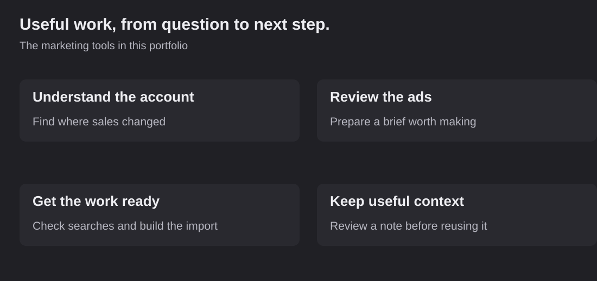

Put the short answer first.
Reason: A busy reviewer needs to understand what changed before reading the detail.
Source: Fictional reporting-format decision, September 8.
Use: Guide how the next report is written.
Waiting for a check.
Review the ads. Understand the results. Get the next piece of work ready.
Try a few examples of the tasks I build around. They use made-up client information and do not connect to advertising accounts.

Pick a task below. Each example gives you the account information and a useful place to start.
You can also turn an ad planner into an import file or check a note before letting AI use it again.
Make an ad-import file · Check a saved AI noteCompare two weeks of ad-platform reporting and find where sales changed.
| Channel | Earlier spend | Earlier revenue | Current spend | Current revenue |
|---|
The revenue decline is concentrated in prospecting. The other rows are unchanged in this sample.
A new ad and an audience change happened this week. I would look at their delivery, the customers and the tracking before deciding what caused the drop.
Compare two sample ads, then open the brief for the next test. The numbers are made up and the bottle image is AI-generated.

AI-generated bottle ad for the sample brand.
Compare easy preparation with the pleasure of a small detour. Keep the product, audience, format, destination and offer the same.
Leave out unsupported claims: insulation, leak resistance and durability need product evidence.
Read the full sample briefLook at what each person searched for. Keep relevant searches and prepare a list of the unrelated searches to block.
Start with the two sample ads. Check them, then download the file. The tool keeps the copy and links together and removes gaps between numbered options.
Check the rows before downloading.
This example shows how my private tool moves ad information into an import file. The sample links are placeholders.
A new note needs checking before it becomes something AI relies on. Here is a made-up example of a reporting preference.
Reason: A busy reviewer needs to understand what changed before reading the detail.
Source: Fictional reporting-format decision, September 8.
Use: Guide how the next report is written.
Waiting for a check.
Keep the reporting preference. Use current account numbers when writing the next report.
Read how my private brain works →Read how I build these tools for my team and see the product screens.